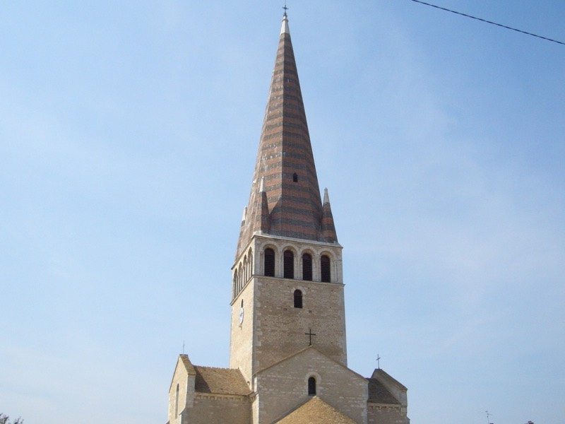

會擔心親戚朋友可以跳過這篇遊記沒關係，看了只會多擔心。
環法FAQ：
Q.為什麼選擇騎腳踏車呢？
A.這是我能想到最輕鬆又最省錢的方式了。
走路太累、開車耗油錢、搭火車太貴、溜直排輪跟滑板車是強者做的事情。
約莫十點時離開N6公路旁的旅館，除了喝開水、吃巧克力餅乾跟可樂糖（已經因為高溫而全部黏在一起）
什麼也沒有吃，中午不到十一點，到一個可以上網的地方，相當專心的上傳遊記。
過沒幾分鐘，抬頭一看，本來沒什麼人的街口，居然擠滿了人？
完全不知道這些人是要來作什麼的？是等會要發麵粉還是有明星的簽名會嗎？
12點整，答案揭曉，大家都是來接小朋友放學的家長，原來小學生星期六要上半天課。
環法FAQ：
Q.為什麼選擇法國？
A.因為沒來過，而且不會說法語。
Q.照這樣的邏輯來講，那也可以去其他國家呀，比如說德國？
A.下次。
Q.那麼非洲呢？
A.你去？
頭髮這麼捲的小孩，算可愛嗎？他一直在玩我的腳踏車，一下摸摸手把，一下碰碰碼表。
上網完畢接著騎，今天的目標是大都市，第戎（DIJON）。
下午一點半花錢買了今天的第一種食物，培根乳酪麵包，相當有份量，2.05歐元，0.02不用找了。
有點鹹的麵包，對於消化背包裡重的要命的開水很有幫助。
環法FAQ：
Q.環法的資金怎麼來的？
A.當兵存的薪水，扣掉三萬元機票錢之後是旅費的1/3、
沒見過面但事業有成的三位網友贊助1/3、親友團支援1.3。
Q.為何想透過網路贊助旅費呢？
A.嗯，算是斂財的一種手段。
下午兩點，當這種美麗的桌布出現的時候，內行的人都知道，去掉浪漫的因素，單純是因為尿急。
屋頂很尖很尖的教堂

下午四點，有點餓，本來是想去餐館裡吃東西，結果時間不對，沒賣吃的，只有飲料。
看著菜單，點了一杯不知道是什麼的MONACO，2.9歐元。
女服務生手腳俐落的就調了起來，成份是：海尼根啤酒+萊姆汁+桃子汁（？）
紅色的飲料，很漂亮，既清涼而且無比的解渴，飲料中的極品。
環法FAQ：
Q.估計環法一圈的距離有多遠呢？兩個月時間騎的完嗎？
A.大約是六千公里左右，看繞小圈還是繞大圈不一定。
兩個月是很寬鬆的估計，出發到現在休息了七天，行程還是綽綽有餘。
葡萄園再度出現。相當有味道的房子。
當然賣酒的店家也很多，相當有味道的酒店。
大約六點之前就到第戎了，在城裡騎車晃了一下
人行步道無比的寬敞，比馬路還好走，
除了滿地的落葉之外，還有像是栗子的東西也是掉滿地。
抬頭看樹上，原來掉下來之前是包在綠色的殼裡面。
熱鬧的地方一點都不馬虎，大教堂
購物街、大旅館，什麼都有。
保持的挺好的，法國人喜歡用噴漆在各式各樣的東西上亂畫。
但由於教育的成功，像這樣明顯的目標，居然放了好幾百年都沒被荼毒。
六點半而已，連旅館都還沒找到，就開始找起了吃飯的地方。
點了13歐元的套餐，由於天氣炎熱，不停的喝著店裡提供的冰開水，還加了冰塊喝。
套餐就只有一盤，沒分什麼沙拉跟主菜。

但這一盤相當大，絕對夠一般人吃到撐的地步。
只是比較好奇的是，生菜沙拉是冰的、煎牛排也是冰的、兩塊豬肉是冰的、連烤雞腿都是冰的。
整盤唯一一樣熱的東西，就是薯條，因為天氣炎熱的緣故，雖然覺得有點奇怪，但其實還挺不錯吃的。
環法FAQ：
Q.旅行到現在什麼事情最令你感動呢？
A.（思考貌）
巴西隊有一次參加世界足球賽，相當被看好可以拿下冠軍。
結果在預賽的時候就因為過度自滿以及失誤連連，居然第一輪比賽就被刷掉了。
球員在搭機回國的時候，每個人都神色凝重相當難過，背負著全國人民的期待而出賽，
不知道怎麼回去面對國人的責難，更多球員害怕可能會被瘋狂的球迷給殺死。
飛機總算抵達了巴西機場，球員們一下飛機就看到機場滿滿的全是民眾。
幾乎全巴西市的市民都到齊了，由市長帶隊在機場默默的迎接球員們的歸國。
所有人都不發一語，靜靜的看著球員們歸來，唯一的一張布條由站在第一排的民眾拉開。
布條上寫著：『失敗了，也要抬頭挺胸。』
每個球員都淚流滿面的走完由民眾排出來的人牆，這段路，沒有掌聲，也沒有怒罵聲。
四年後，巴西隊捲土重來，果然不負重望，奪下了世界冠軍的獎盃，並多次連霸。
Q...........你是認真的嗎？
A.難道你不覺得很感動嗎？我看到這個故事幾乎哭出來了耶。
Q.可是這跟環法沒什麼關連性呀？
A.騎車的時候，偶爾會想起這件事情，然後鼻頭就會酸一下。
甜點很講究，一球香草冰淇淋放在現烤的巧克力蛋糕（很熱）淋上巧克力醬、櫻桃醬、撒上糖粉。
吃一口蛋糕發現，裡面還有融化的巧克力冰淇淋跟巧克力醬，真是鬼斧神工的甜點。
結帳時，原來甜點不是附在套餐裡的，要另外加算，光是這一盤就要6.9歐元。
飯後一杯濃縮咖啡，香濃無比，只是這時候能讓我喝冰的汽水我會更開心。

吃完這一餐，心中有一種奇妙的感覺，難以表達出來，有點厭惡感。
『日子會不會過的太爽了一點呢？』
天天這樣吃大餐、喝大酒、睡大床、當大爺，騎幾個小時腳踏車了不起是吧？
八點整，離開第戎，接著騎，沿著N74公路往北繼續移動，希望能找到便宜的公路旅館過夜。
已經不知道是第幾次看著夕陽西下騎車了。
環法FAQ：
Q.旅行中你最想念的是？
A.床。
Q.能不能說得詳細一點呢？
A.上床、睡覺。
Q.中間那個『、』有特別的意義嗎？
A.可加可不加。
天黑之前，找到一間兩星級的旅館，索價38歐元，嫌貴不住，所以繼續往下騎。
有幾次夜騎的經驗，知道法國晚上是不開路燈的，所以拿出紅色車尾燈，裝在後面閃紅光，
可以提醒後面來車注意我，別就這麼撞上來，一拿出來發現，相當好，沒電了。
出國前才換過的全新的電池，用沒幾次而已就跟我說沒電，有些不爽。還是夾在車子後面。
接著拿出買了很久都沒有用的車頭燈，幸好這個有電，想要把燈固定在把手上，
鎖了老半天就是鎖不好，從夕陽鎖到天黑，一時不爽用力過頭，居然把螺絲母給弄飛了。
低頭用燈照，找了半天也沒找到，所以沒有固定座可以用，燈就這麼樣的拿在手上照明。
說是照明，其實沒什麼意義，因為亮度實在太可笑，只能勉強看見前方三公尺左右的輪廓。
但有比沒有好，嫌棄的話就關掉不要用，看會不會摔死。
環法FAQ：
Q.為什麼到了目的地還要離開繼續騎呢？大城市不是比較好找旅館嗎？
A.因為想找點麻煩，日子過的太安逸了，都不知道旅行的目的何在。
順便想找回充滿冒險心態的自己，找麻煩，也找自己。
Q.聽起來，很像是找自己麻煩？
A.正是如此。
晚上九點十分，摸黑騎上本來是腳踏車專用道，但卻鋪滿了碎石頭的地方，這麼剛好，這邊是下坡。
所以腳踏車跌倒了，好可憐。
裝備大致良好，相機沒壞，所以拍了摔車的照片，電腦沒壞，所以可以寫遊記，FCR1前輪爆胎，搖頭嘆氣。
車主沒事，所以還能在這邊虎爛說故事，只有左手跟右腳輕微擦傷而已。
塗點口水自然就會好。
牽著車，前面就是公車等候站，還挺大的，趁著電腦有電就把照片存了起來，順便寫遊記。
接著摸黑，用手電筒照明，把前輪的內胎給換了。
再往前騎個一小段路，無光害的山裡，滿天的星空閃爍。
有多久沒有看過這麼漂亮的夜空了呢？記憶中，從來就沒有看過這麼多的星星。
環法FAQ：
Q.好吧，那旅行到現在什麼事情最讓你覺得開心？
A.太多了，好比我現在第三度露宿街頭，坐在漆黑的公車等候站裡，手腳痛的要命，但是很開心。
Q.講點也會讓旁人感到開心的事情吧。
A.嗯.....因為愛琳娜對她的體重一直很保密，是僅次於亞特蘭提斯王國沈沒的謎題。
有一次我就硬把她抱起來，然後抱著她站到體重計上面，這樣就能解開王國沈沒的真相。
天才的數學家可以將兩個人加起來的體重，再減去我自己的體重而求出愛琳娜的體重。
可是史努比體重計經不起這樣的考驗，抱著她一站上去，指針立刻破表，從此再也沒辦法使用了。
Q.這跟環法的關連性是？
A.騎車的時候偶爾會想到，然後就傻笑幾秒鐘。
忍著傷痛騎了七公里，到城鎮時所有的商店都關門了。那是當然的，畢竟已經超過十一點了呀。
在自動販賣機買了一瓶1.5歐元的可樂當摔車的獎勵。
今晚睡在廢棄的加油站，入口跟出口都用鐵絲網圍了起來，所以不會有車子跟奇奇怪怪的人跑進來。
傷口止血的狀況很好，在公車等候站的時候就已經完全止住，騎了一小段路也沒有讓情況變慘。
半夜三、四點左右，被冷醒。
今天找的露宿地點太空曠，不怎麼能擋風，冷是一定會的。
告訴自己，什麼都可以忘記，要記住現在的溫度，是那麼樣的刺骨，那麼樣的深寒，不要忘記了這種感受。
現在內心唯一的小小希望，就是要靠自己的腳騎回巴黎，路程短少一千公里也無所謂，
我•要•騎•回•去。